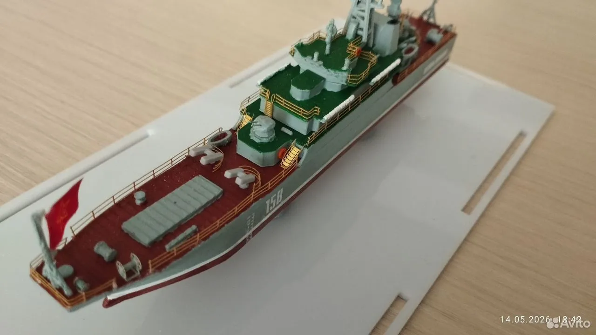

Подарок отцу, мужу или деду
Поможем начать даже с неполных данных о службе.

Персональные модели кораблей ВМФ
Назовите корабль или пришлите фотографию — мы создадим его цифровую модель с нуля с учётом проекта и конкретного борта. Ручная окраска, персональная карточка и защитный бокс — от 10 000 ₽.
Не знаете проект или бортовой номер — достаточно названия, годов службы или фотографии.
Поможем начать даже с неполных данных о службе.
Уточним конкретный борт и данные для персональной карточки.
Воссоздадим нужный проект и конкретный борт с нуля.
Не сувенир. Личная история.
Модель создаётся по реальному кораблю: корпус, надстройки, вооружение, мачты и флаги передаются настолько подробно, насколько позволяет масштаб.
На подставке — сменная карточка «Мой корабль»: фотография, звание, должность и годы службы. Именно она превращает макет в личную вещь.
 Персональная карточка входит в композицию
Персональная карточка входит в композициюЧто входит в стоимость
Цена от 10 000 ₽ относится к базовой модели БДК проекта 775/2. Другие корабли мы моделируем самостоятельно с нуля; точная стоимость и срок зависят от сложности проекта и согласуются до оформления заказа.
Мы самостоятельно строим цифровую 3D-модель конкретного проекта и борта.
Палубы, корпус, флаги и мелкие элементы собираются в мастерской.
Прозрачный акриловый короб 20 × 10 × 10 см защищает от пыли.
Компактный формат для книжной полки, кабинета или домашней коллекции.
Заказ через Авито
В Авито вам ответит Алексей — автор моделей и мастер, который ведёт заказ.
Алексейчастный мастер, Москва
5,0рейтинг профиля
19 отзывовв профиле Авито
С 2010 годана площадке
23 отправкичерез Авито Доставку
Данные подтвержденыплощадкой Авито
БДК «Цезарь Куников»
Проект 775/2 · Черноморский флот
Модель 170 × 25 × 55 мм
Нажмите на фотографию, чтобы рассмотреть крупнее
Как появляется модель
Проект, название, бортовой номер и годы службы. Если знаете не всё — разберёмся по имеющимся данным.
Собираем сведения о проекте, периоде службы и конкретном борте, затем согласовываем карточку, стоимость и срок.
Модель печатается, собирается и окрашивается вручную. Перед отправкой вы получите фотографии.
Композиция в акриловом боксе упаковывается в картонную коробку. Доставка оформляется через Авито.
До первого сообщения
Мы создаём цифровые модели кораблей самостоятельно с нуля. Напишите название или пришлите фотографию: мы определим проект, уточним нужный борт и сообщим стоимость и срок работы.
Пришлите всё, что известно: название, годы службы, флот или фотографию. Этого достаточно, чтобы начать поиск нужного варианта.
Это стоимость базовой композиции БДК проекта 775/2. Для другого корабля требуется отдельная разработка цифровой модели с нуля, поэтому цена зависит от сложности проекта. Точную сумму мы сообщим до оформления.
Показанный БДК имеет длину 17 см. Размер защитного бокса — 20 × 10 × 10 см: композиция помещается на книжной полке, столе или тумбе.
Срок зависит от сложности корабля и объёма разработки. Сообщите желаемую дату в первом сообщении — мы оценим работу и назовём срок до оформления заказа.
Обсуждение, оформление и доставка проходят через Авито. Перед отправкой вы получите фотографии готовой работы.
Начнём с одного названия
Напишите название или пришлите фотографию. Мы определим проект, уточним детали нужного борта и ответим по срокам и стоимости. В Авито вам ответит Алексей — автор моделей.
Базовая модель БДК пр. 775/2
от 10 000 ₽В первом сообщении укажите название корабля, годы службы и дату, к которой нужна модель. Если знаете — добавьте проект и бортовой номер.Написать Алексею на Авито ↗Сайт не принимает оплату. Возможность, цена и срок согласуются до оформления.